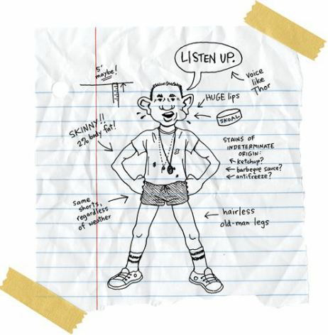
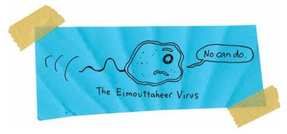
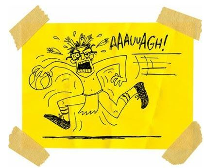

Reindeer Games
I almost didn’t try out for the Reardan basketball team. I just figured I wasn’t going to be good enough to make even the C squad. And I didn’t want to get cut from the team. I didn’t think I could live through that humiliation.
But my dad changed my mind.
“Do you know about the first time I met your mother?” he asked.
“You’re both from the rez,” I said. “So it was on the rez. Big duh.”
“But I only moved to this rez when I was five years old.”
“So.”
“So your mother is eight years older than me.”
“And there’s a partridge in the pear tree. Get to the point, Dad.”
“Your mother was thirteen and I was five when we first met. And guess how we first met?”
“How?”
“She helped me get a drink from a water fountain.”
“Well, that just seems sort of gross,” I said.
“I was tiny,” Dad said. “And she boosted me up so I could get a drink. And imagine, all these years later and we’re married and have two kids.”
“What does this have to do with basketball?”
“You have to dream big to get big.”
“That’s pretty dang optimistic for you, Dad.”
“Well, you know, your mother helped me get a drink from the water fountain last night, if you know what I mean.”
And all I could say to my father was, “Ewwwwwwwwww.”
That’s one more thing people don’t know about Indians: we love to talk dirty.
Anyway, I signed up for basketball.
On the first day of practice, I stepped onto the court and felt short, skinny, and slow.
All of the white boys were good. Some were great.
I mean, there were some guys who were 6 foot 6 and 6 foot 7.
Roger the Giant was strong and fast and could dunk.
I tried to stay out of way. I figured I’d die if he ran me over. But he just smiled all the time, played hard, and slapped me hard on the back.
We all shot basketballs for a while. And then Coach stepped onto the court.

Forty kids IMMEDIATELY stopped bouncing and shooting and talking. We were silent, SNAP, just like that.
“I want to thank you all for coming out today,” Coach said. “There are forty of you. But we only have room for twelve on the varsity and twelve on the junior varsity.”
I knew I wouldn’t make those teams. I was C squad material, for sure.
“In other years, we’ve also had a twelve-man C squad,” Coach said. “But we don’t have the budget for it this year. That means I’m going to have to cut sixteen players today.”
Twenty boys puffed up their chests. They knew they were good enough to make either the varsity or the junior varsity.
The other twenty shook their heads. We knew we were cuttable.
“I really hate to do this,” Coach said. “If it were up to me, I’d keep everybody. But it’s not up to me. So we’re just going to have to do our best here, okay? You play with dignity and respect, and I’ll treat you with dignity and respect, no matter what happens, okay?”
We all agreed to that.
“Okay, let’s get started,” Coach said.
The first drill was a marathon. Well, not exactly a marathon. We had to run one hundred laps around the gym. So forty of us ran.
And thirty-six of us finished.
After fifty laps, one guy quit, and since quitting is contagious, three other boys caught the disease and walked off the court, too.

I didn’t understand. Why would you try out for a basketball team if you didn’t want to run?
I didn’t mind. After all, that meant only twelve more guys had to be cut. I only had to be better than twelve other guys.
Well, we were good and tired after that run.
And then Coach immediately had us playing full-court one-on-one.
That’s right.
FULL-COURT ONE-ON-ONE.
That was torture.
Coach didn’t break it down by position. So quick guards had to guard power forwards, and vice versa. Seniors had to guard freshmen, and vice versa. All-stars had to guard losers like me, and vice versa.
Coach threw me the ball and said, “Go.”
So I turned and dribbled straight down the court.
A mistake.
Roger easily poked the ball away and raced down toward his basket.
Ashamed, I was frozen.
“What are you waiting for?” Coach asked me. “Play some D.”
Awake, I ran after Roger, but he dunked it before I was even close.
“Go again,” Coach said.
This time, Roger tried to dribble down the court. And I played defense. I crouched down low, spread my arms and legs high and wide, and gritted my teeth.
And then Roger ran me over. Just sent me sprawling.
He raced down and dunked it again while I lay still on the floor.
Coach walked over and looked down at me.
“What’s your name, kid?” he asked.
“Arnold,” I said.
“You’re from the reservation?”
“Yes.”
“Did you play basketball up there?”
“Yes. For the eighth-grade team.”
Coach studied my face.
“I remember you,” he said. “You were a good shooter.”
“Yeah,” I said.
Coach studied my face some more, as if he were searching for something.
“Roger is a big kid,” he said.
“He’s huge,” I said.
“You want to take him on again? Or do you need a break?”
Ninety percent of me wanted to take the break. But I knew if I took that break I would never make the team.
“I’ll take him on again,” I said.
Coach smiled.
“All right, Roger,” he said. “Line up again.”
I stood up again. Coach threw me the ball. And Roger came for me. He screamed and laughed like a crazy man. He was having a great time. And he was trying to intimidate me.
He did intimidate me.
I dribbled with my right hand toward Roger, knowing that he was going to try to steal the ball.
If he stayed in front of me and reached for the ball with his left hand, then there was no way I could get past him. He was too big and strong, too immovable. But he reached for the ball with his right hand, and that put him a little off balance, so I spun-dribbled around him, did a 360, and raced down the court. He was right behind me. I thought I could outrun him, but he caught up to me and just blasted me. Just me skidding across the floor again. The ball went bouncing into the stands.
I should have stayed down.
But I didn’t.
Instead, I jumped up, ran into the stands, grabbed the loose ball, and raced toward Roger standing beneath the basket.
I didn’t even dribble.
I just ran like a fullback.
Roger crouched, ready to tackle me like he was a middle linebacker.
He screamed; I screamed.
And then I stopped short, about fifteen feet from the hoop, and made a pretty little jump shot.
Everybody in the gym yelled and clapped and stomped their feet.
Roger was mad at first, but then he smiled, grabbed the ball, and dribbled toward his hoop.
He spun left, right, but I stayed with him.
He bumped me, pushed me, and elbowed me, but I stayed with him. He went up for a layup and I fouled him. But I’d learned there are NO FOULS CALLED IN FULL-COURT ONE-ON-ONE, so I grabbed the loose ball and raced for my end again.
But Coach blew the whistle.
“All right, all right, Arnold, Roger,” Coach said. “That’s good, that’s good. Next two, next two.”
I took my place at the back of the line and Roger stood next to me.
“Good job,” he said and offered his fist.
I bumped his fist with mine. I was a warrior!

And that’s when I knew I was going to make the team.
Heck, I ended up on the varsity. As a freshman. Coach said I was the best shooter who’d ever played for him. And I was going to be his secret weapon. I was going to be his Weapon of Mass Destruction.
Coach sure loved those military metaphors.
Two weeks later, we traveled up the road for our first game of the season. And our first game was against Wellpinit High School.
Yep.
It was like something out of Shakespeare.
The morning of the game, I’d woken up in my rez house, so my dad could drive me the twenty-two miles to Reardan, so I could get on the team bus for the ride back to the reservation.
Crazy.
Do I have to tell you that I was absolutely sick with fear?
I vomited four times that day.
When our bus pulled into the high school parking lot, we were greeted by some rabid elementary school kids. Some of those little dudes and dudettes were my cousins.
They pelted our bus with snowballs. And some of those snowballs were filled with rocks.
As we got off the bus and walked toward the gym, I could hear the crowd going crazy inside.
They were chanting something.
I couldn’t make it out.
And then I could.
The rez basketball fans were chanting, “Ar-nold sucks! Ar-nold sucks! Ar-nold sucks!”
They weren’t calling me by my rez name, Junior. Nope, they were calling me by my Reardan name.
I stopped.
Coach looked back at me.
“Are you okay?” he asked.
“No,” I said.
“You don’t have to play this one,” he said.
“Yes, I do,” I said.
Still, I probably would have turned around if I hadn’t seen my mom and dad and grandma waiting at the front door.
I know they’d been pitched just as much crap as I was. And there they were, ready to catch more crap for me. Ready to walk through the crap with me.
Two tribal cops were also there.
I guess they were for security. For whose security, I don’t know. But they walked with our team, too.
So we walked through the front and into the loud gym.
Which immediately went silent.
Absolutely quiet.
My fellow tribal members saw me and they all stopped cheering, talking, and moving.
I think they stopped breathing.
And, then, as one, they all turned their backs on me.
It was a fricking awesome display of contempt.
I was impressed. So were my teammates.
Especially Roger.
He just looked at me and whistled.
I was mad.
If these dang Indians had been this organized when I went to school here, maybe I would have had more reasons to stay.
That thought made me laugh.
So I laughed.
And my laughter was the only sound in the gym.
And then I noticed that the only Indian who hadn’t turned his back on me was Rowdy. He was standing on the other end of the court. He passed a basketball around his back, around his back, around his back, like a clock. And he glared at me.
He wanted to play.
He didn’t want to turn his back on me.
He wanted to kill me, face-to-face.
That made me laugh some more.
And then Coach started laughing with me.
And so did my teammates.
And we kept laughing as we walked into the locker room to get ready for the game.
Once inside the locker room, I almost passed out. I slumped against a locker. I felt dizzy and weak. And then I cried, and felt ashamed of my tears.
But Coach knew exactly what to say.
“It’s okay,” Coach said to me, but he was talking to the whole team. “If you care about something enough, it’s going to make you cry. But you have to use it. Use your tears. Use your pain. Use your fear. Get mad, Arnold, get mad.”
And so I got mad.
And I was still mad and crying when we ran out for warm-ups. And I was still mad when the game started. I was on the bench. I didn’t think I was going to play much. I was only a freshman.
But halfway through the first quarter, with the score tied at 10, Coach sent me in.
And as I ran onto the court, somebody in the crowd threw a quarter at me. AND HIT ME IN THE FRICKING FOREHEAD!
They drew blood.
I was bleeding. So I couldn’t play.
Bleeding and angry, I glared at the crowd.
They taunted me as I walked into the locker room.
I bled alone, until Eugene, my dad’s best friend, walked in. He had just become an EMT for the tribal clinic.
“Let me look at that,” he said, and poked at my wound.
“You still got your motorcycle?” I asked.
“Nah, I wrecked that thing,” he said, and dabbed antiseptic on my cut. “How does this feel?”
“It hurts.”
“Ah, it’s nothing,” he said. “Maybe three stitches. I’ll drive you to Spokane to get it fixed up.”
“Do you hate me, too?” I asked Eugene.
“No, man, you’re cool,” he said.
“Good,” I said.
“It’s too bad you didn’t get to play,” Eugene said. “Your dad says you’re getting pretty good.”
“Not as good as you,” I said.
Eugene was a legend. People say he could have played in college, but people also say Eugene couldn’t read.
You can’t read, you can’t ball.
“You’ll get them next time,” Eugene said.
“You stitch me up,” I said.
“What?”
“You stitch me up. I want to play tonight.”
“I can’t do that, man. It’s your face. I might leave a scar or something.”
“Then I’ll look tougher,” I said. “Come on, man.”
So Eugene did it. He gave me three stitches in my forehead and it hurt like crazy, but I was ready to play the second half.
We were down by five points.
Rowdy had been an absolute terror, scoring twenty points, grabbing ten rebounds, and stealing the ball seven times.
“That kid is good,” Coach said.
“He’s my best friend,” I said. “Well, he used to be my best friend.”
“What is he now?”
“I don’t know.”
We scored the first five points of the third quarter, and then Coach sent me into the game.
I immediately stole a pass and drove for a layup.
Rowdy was right behind me.
I jumped into the air, heard the curses of two hundred Spokanes, and then saw only a bright light as Rowdy smashed his elbow into my head and knocked me unconscious.
Okay, I don’t remember anything else from that night. So everything I tell you now is secondhand information.
After Rowdy knocked me out, both of our teams got into a series of shoving matches and push-fights.
The tribal cops had to pull twenty or thirty adult Spokanes off the court before any of them assaulted a teenage white kid.
Rowdy was given a technical foul.
So we shot two free throws for that.
I didn’t shoot them, of course, because I was already in Eugene’s ambulance, with my mother and father, on the way to Spokane.
After we shot the technical free throws, the two referees huddled. They were two white dudes from Spokane who were absolutely terrified of the wild Indians in the crowd and were willing to do ANYTHING to make them happy. So they called technical fouls on four of our players for leaving the bench and on Coach for unsportsmanlike conduct.
Yep, five technicals. Ten free throws.
After Rowdy hit the first six free throws, Coach cursed and screamed, and was thrown out of the game.
Wellpinit ended up winning by thirty points.
I ended up with a minor concussion.
Yep, three stitches and a bruised brain.
My mother was just beside herself. She thought I’d been murdered.
“I’m okay,” I said. “Just a little dizzy.”
“But your hydrocephalus,” she said. “Your brain is already damaged enough.”
“Gee, thanks, Mom,” I said.
Of course, I was worried that I’d further damaged my already damaged brain; the doctors said I was fine.
Mostly fine.
Later that night, Coach talked his way past the nurses and into my room. My mother and father and grandma were asleep in their chairs, but I was awake.
“Hey, kid,” Coach said, keeping his voice low so he wouldn’t wake my family.
“Hey, Coach,” I said.
“Sorry about that game,” he said.
“It’s not your fault.”
“I shouldn’t have played you. I should have canceled the whole game. It’s my fault.”
“I wanted to play. I wanted to win.”
“It’s just a game,” he said. “It’s not worth all this.”
But he was lying. He was just saying what he thought he was supposed to say. Of course, it was not just a game. Every game is important. Every game is serious.
“Coach,” I said. “I would walk out of this hospital and walk all the way back to Wellpinit to play them right now if I could.”
Coach smiled.
“Vince Lombardi used to say something I like,” he said.
“It’s not whether you win or lose,” I said. “It’s how you play the game.”
“No, but I like that one,” Coach said. “But Lombardi didn’t mean it. Of course, it’s better to win.”
We laughed.
“No, I like this other one more,” Coach said. “The quality of a man’s life is in direct proportion to his commitment to excellence, regardless of his chosen field of endeavor.”
“That’s a good one.”
“It’s perfect for you. I’ve never met anybody as committed as you.”
“Thanks, Coach.”
“You’re welcome. Okay, kid, you take care of your head. I’m going to get out of here so you can sleep.”
“Oh, I’m not supposed to sleep. They want to keep me awake to monitor my head. Make sure I don’t have some hidden damage or something.”
“Oh, okay,” Coach said. “Well, how about I stay and keep you company, then?”
“Wow, that would be great.”
So Coach and I sat awake all night.
We told each other many stories.
But I never repeat those stories.
That night belongs to just me and my coach.